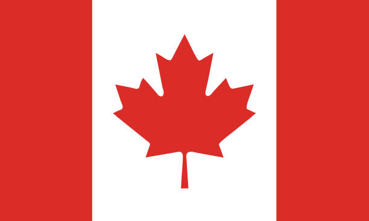

Canadá es un pais ubicado en América del Norte el cual tiene el honor de ser el pais con mayor extensión territorial de todo el continente americano.
A su vez, la diversidad cultural en el territorio es muy marcada al contar con dos idiomas oficiales, el inglés y el francés. No solo eso sino que es un pais con una gran riqueza multicultural donde en lugares como Quebec, Montreal, Toronto, Vancouver y Ottawa se combinan distintas tradiciones.
No obstante, pese a lo que se tiene pensado cuando te imaginas el clima frío del norte, al ver su capital, Ottawa, y otras grandes ciudades podemos observar que son muy modernas y organizadas, haciendo que sean de las mas lindas y avanzadas de toda América.

O Canada!
Our home and native land!
True patriot love in all of us command.
With glowing hearts we see thee rise,
The True North strong and free!
From far and wide,
O Canada, we stand on guard for thee.
God keep our land glorious and free!
O Canada, we stand on guard for thee.
O Canada, we stand on guard for thee.